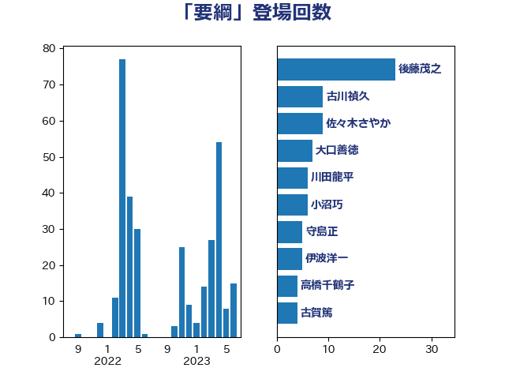

単語「要綱」

| 後藤茂之 | 自由民主党 | 23 回 |
| 古川禎久 | 自由民主党 | 9 回 |
| 佐々木さやか | 公明党 | 9 回 |
| 大口善徳 | 公明党 | 7 回 |
| 川田龍平 | 立憲民主党 | 6 回 |
| 小沼巧 | 立憲民主党 | 6 回 |
| 守島正 | 日本維新の会 | 5 回 |
| 伊波洋一 | 無所属 | 5 回 |
| 高橋千鶴子 | 日本共産党 | 4 回 |
| 古賀篤 | 自由民主党 | 4 回 |
| 加藤勝信 | 自由民主党 | 4 回 |
| 齋藤健 | 自由民主党 | 3 回 |
| 高良鉄美 | 無所属 | 3 回 |
| 西銘恒三郎 | 自由民主党 | 3 回 |
| 舩後靖彦 | れいわ新選組 | 3 回 |
| 石井準一 | 自由民主党 | 3 回 |
| 浜田聡 | NHK党 | 3 回 |
| 岡田直樹 | 自由民主党 | 3 回 |
| 小倉將信 | 自由民主党 | 3 回 |
| 吉田統彦 | 立憲民主党 | 3 回 |
| 一谷勇一郎 | 日本維新の会 | 3 回 |
| 高見康裕 | 自由民主党 | 2 回 |
| 長友慎治 | 国民民主党 | 2 回 |
| 赤嶺政賢 | 日本共産党 | 2 回 |
| 自見はなこ | 自由民主党 | 2 回 |
| 田村まみ | 国民民主党 | 2 回 |
| 津島淳 | 自由民主党 | 2 回 |
| 打越さく良 | 立憲民主党 | 2 回 |
| 高橋はるみ | 自由民主党 | 1 回 |
| 馬淵澄夫 | 立憲民主党 | 1 回 |
| 阿部司 | 日本維新の会 | 1 回 |
| 鈴木俊一 | 自由民主党 | 1 回 |
| 金子恭之 | 自由民主党 | 1 回 |
| 金城泰邦 | 公明党 | 1 回 |
| 野田聖子 | 自由民主党 | 1 回 |
| 野田国義 | 立憲民主党 | 1 回 |
| 足立康史 | 日本維新の会 | 1 回 |
| 西村智奈美 | 立憲民主党 | 1 回 |
| 葉梨康弘 | 自由民主党 | 1 回 |
| 芳賀道也 | 国民民主党 | 1 回 |
| 羽田次郎 | 立憲民主党 | 1 回 |
| 紙智子 | 日本共産党 | 1 回 |
| 笠浩史 | 無所属 | 1 回 |
| 稲富修二 | 立憲民主党 | 1 回 |
| 神谷裕 | 立憲民主党 | 1 回 |
| 石橋通宏 | 立憲民主党 | 1 回 |
| 石井正弘 | 自由民主党 | 1 回 |
| 湯原俊二 | 立憲民主党 | 1 回 |
| 清水真人 | 自由民主党 | 1 回 |
| 浅田均 | 日本維新の会 | 1 回 |
| 河野太郎 | 自由民主党 | 1 回 |
| 柴田巧 | 日本維新の会 | 1 回 |
| 杉尾秀哉 | 立憲民主党 | 1 回 |
| 本田太郎 | 自由民主党 | 1 回 |
| 本村伸子 | 日本共産党 | 1 回 |
| 新垣邦男 | 立憲民主党 | 1 回 |
| 斉藤鉄夫 | 公明党 | 1 回 |
| 掘井健智 | 日本維新の会 | 1 回 |
| 川合孝典 | 国民民主党 | 1 回 |
| 岸真紀子 | 立憲民主党 | 1 回 |
| 山田勝彦 | 立憲民主党 | 1 回 |
| 山添拓 | 日本共産党 | 1 回 |
| 小西洋之 | 立憲民主党 | 1 回 |
| 小林鷹之 | 自由民主党 | 1 回 |
| 小林茂樹 | 自由民主党 | 1 回 |
| 小宮山泰子 | 立憲民主党 | 1 回 |
| 寺田学 | 立憲民主党 | 1 回 |
| 塩川鉄也 | 日本共産党 | 1 回 |
| 堤かなめ | 立憲民主党 | 1 回 |
| 嘉田由紀子 | 無所属 | 1 回 |
| 和田義明 | 自由民主党 | 1 回 |
| 北神圭朗 | 無所属 | 1 回 |
| 加田裕之 | 自由民主党 | 1 回 |
| 倉林明子 | 日本共産党 | 1 回 |
| 伊藤岳 | 日本共産党 | 1 回 |
| 伊東信久 | 日本維新の会 | 1 回 |
| 伊佐進一 | 公明党 | 1 回 |
| 今井絵理子 | 自由民主党 | 1 回 |
| 仁比聡平 | 日本共産党 | 1 回 |
| 中谷真一 | 自由民主党 | 1 回 |